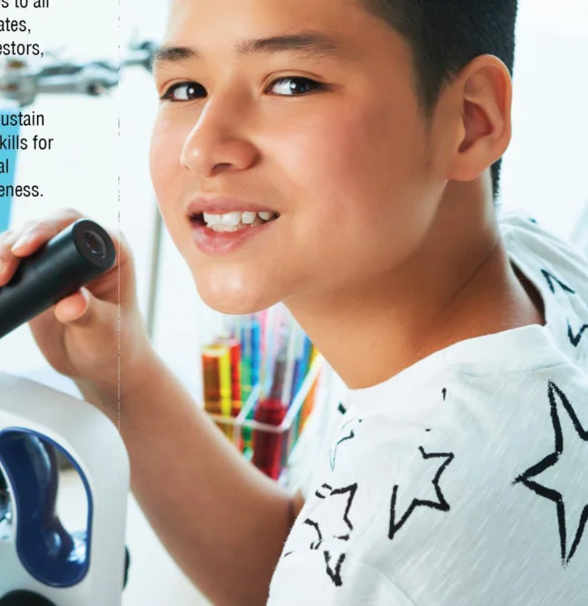
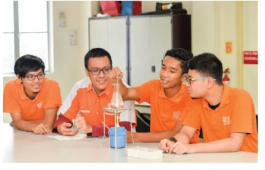
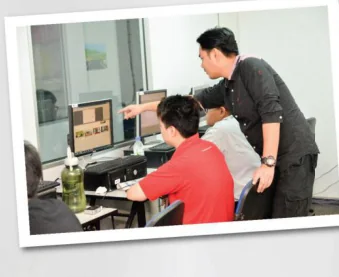
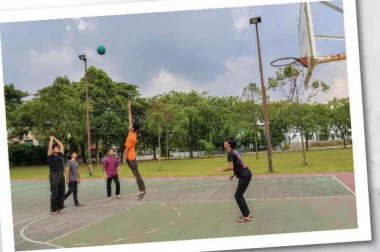
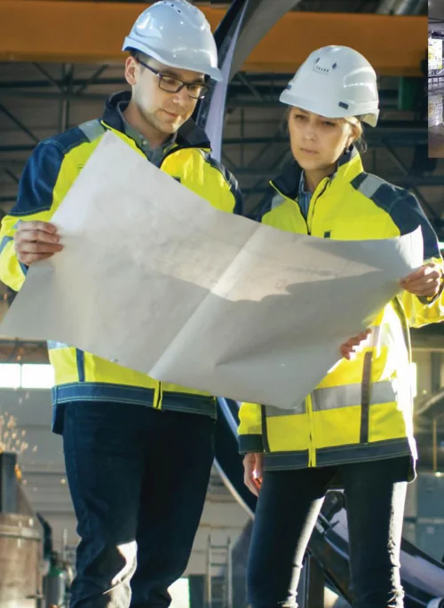

01
Key Stages 1 & 2
Cambridge Primary
An engaging foundation in language, mathematics, science, ICT and creative expression.
MITstem International School
Where curiosity meets discovery. Explore a school vision that brings strong academics, hands-on STEM learning and creativity together to help young minds imagine a bigger future.
Connecting academic ideas with the world of technology.
From primary foundations through advanced study.
Growing curious, independent and collaborative learners.


Curiosity changes everything ↗Welcome to MITstem
Education should inspire more than good grades. It should encourage young people to ask questions, connect ideas and grow with confidence.
The MITstem prospectus outlines a warm school community built on respect, empathy, creativity and independent learning. Its approach balances academic development with personal growth and experiences beyond the classroom.
Learning pathways
Explore the Cambridge curriculum pathway and educational stages described in the MITstem prospectus.
An engaging foundation in language, mathematics, science, ICT and creative expression.
Building deeper subject understanding, independence and exposure to technical learning.
A subject-focused pathway toward Cambridge IGCSE / O Level, as described in the prospectus.
The prospectus describes Cambridge International AS and A Level progression.
* Ages, stages and qualifications are reproduced from the 2019–2020 prospectus for reference; current offerings require confirmation.
Learning beyond the ordinary
The MITstem curriculum concept introduces the world of robotics, connected technology, automation, science and 3D design. The aim is to connect what students learn to how the world works.
From understanding a scientific idea to solving a technical challenge, STEM offers a different way of thinking: curious, collaborative and hands-on.
Future-focused subjects
A glimpse into the technical learning areas highlighted in the original school prospectus.
Discover how mechanics, electronics and programming come together in the technologies around us.
Explore · Build · TestDevelop computational thinking and get to know the connected world through ICT and IoT topics.
Think · Code · ConnectTurn curiosity into creative solutions through digital modelling, 3D printing and CAD/CAM ideas.
Imagine · Design · CreateBeyond the classroom
The school vision includes enrichment, co-curricular activity and opportunities to discover different interests.

Learn together ↗
Find your interests ↗
See what’s possible ↗LET’S TALK ABOUT THEIR FUTURE
Have questions about the curriculum, school availability or admissions? Get in touch with the MITstem team.